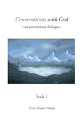

Conversations with God
Book 1

Page Contents: Quotes - Excerpts
Quotes:
- "Feeling is the language of the soul" - Page 3
- "...hidden in your deepest feelings is your highest
truth" - Page 3
- "All people are special" - Page 6
- "The deepest secret is that life is not a process of
discovery, but a process of creation" - Page 20
- "You came into this life with nothing to learn - you
have only to demonstrate what you already know" - Page 34
- "You are always in the process of creating. Every
moment. Every minute. Every day." - Page 35
- "There is only one reason to do anything: as a statement
to the universe of Who You Are" - Page 36
- "Allow each soul to walk its path" - Page 47
- "A thing is only right or wrong because you say it is. A
thing is not right or wrong intrinsically." - Page 48
- "Emotion is the power which attracts. That which you
fear strongly, you will experience" - Page 54
- "What you fear most is what will most plague you. Fear
will draw it to you like a magnet" - Page 56
- "Masters are those who have chosen only love. In every
circumstance. Even as they were being killed, they loved
their murderers" - Page 57
- "There are no coincidences in the universe" - Page 58
!!!
- "God is in the sadness and the laughter, in the bitter
and the sweet. There is a divine purpose behind
everything—and therefore a divine presence in everything" -
Page 60
- "Very few of the value judgments you have incorporated
into your truth are judgments you, yourself, have made based
on your own experience. Yet experience is what you came here
for—and out of your experience were you to create yourself.
You have created yourself out of the experience of others" -
Page 62
- "Desire is the beginning of all creation. It is first
thought. It is a grand feeling within the soul" - Page 65
- "You are a three-fold being. You consist of body, mind,
and spirit" - Page 73
- "Your soul is the sum-total of every feeling you've ever
had" - Page 74
- "The first thing to understand about the universe is
that no condition is "good" or "bad". It just is. So stop
making value judgments.
The second thing to know is that all conditions are
temporary. Nothing stays the same, nothing remains static.
Which way a thing changes depends on you" - Page 79
- "All your life you think you are your body. Some of the
time you think you are your mind. It is at the time of your
death that you find out Who You Really Are" - Page 81
- "You are goodness and mercy and compassion and
understanding. You are peace and joy and light. You
forgiveness and patience, strength and courage, a helper in
time of need, a comforter in time of sorrow, a healer in
time of injury, a teacher in times of confusion. You are the
deepest wisdom and the highest truth; the greatest peace and
the greatest love. You are these things. And in moments of
your life you have known yourself as these things.
Choose now to know yourself as these things always" - Page
86
- "Life is a creation, not a discovery" - Page 90
- "You do not live each day to discover what it holds for
you, but to create it. You are creating your reality every
minute, probably without knowing it" - Page 91
- "In order to truly know God, you have to be out of your
mind" - Page 94
- "Enlightenment is understanding that there is nowhere to
go, nothing to do, except exactly who you're being right
now" - Page 98
- "What you resist, persists" - Page 100
- "Passion is the love of turning being into action. It
fuels the engine of creation. It changes concepts to
experience" - Page 101
- "To live your life without expectations—without the need
for specific results—that is freedom" - Page 101
- "Beingness is the highest state of existence." - Page
101
- "The point of life is not to get anywhere—it is to
notice that you are, and have always been, already there.
You are, always and forever, in the moment of pure creation.
The point of life is therefore to create—who and what you
are, and then to experience that" - Page 104
- "Suffering is an unnecessary aspect of the human
experience. It is not only unnecessary, it is unwise,
uncomfortable, and hazardous to your health" - Page 105
- "...suffering has nothing to do with events, but with
one's reaction to them" - Page 105
- "What's happening is merely what's happening. How you
feel about it is another matter" - Page 105
- "There is nothing scary about life, if you are not
attached to results" - Page 110
- "You always get what you create, and you are always
creating" - Page 118
- "...the purpose of relationships is not to have another
who might complete you; but to have another with whom you
might share your completeness" - Page 123
- "You must first see your Self as worthy before you can
see another as worthy. You must first see your Self as
blessed before you can see another as blessed. You must
first know your Self to be holy before you can acknowledge
holiness in another" - Page 126
- "Cultivate the technique of seeing all problems as
opportunities" - Page 141
- "By your decisions you paint a portrait of Who You Are"
- Page 154
- "Embarrassment is the response of a person who still has
an ego investment in how others see him" - Page 161
- "Doing is a function of the body. Being is a function of
the soul. The body is always doing something. Every minute
of every day it's up to something. It never stops, it never
rests, it's constantly doing something.
It's either doing what it's doing at the behest of the
soul—or in spite of the soul. The quality of your life hangs
in the balance" - Page 170
- "True masters are those who have chosen to make a life,
rather than a living" - Page 176
- "The actions of the body were meant to be reflections of
a state of being, not attempts to attain a state of being" -
Page 185
- "Religion is your attempt to speak of the unspeakable.
It does not do a very good job" - Page 195
|
Excerpts:
- All Illness is Self-created
Now let's understand what you probably already know: all
illness is self-created. Even conventional medical doctors
are now seeing how people make themselves sick.
Most people do so quite unconsciously. (They don't even
know what they're doing.) So when they get sick, they don't
know what hit them. It feels as though something has befallen them,
rather than that they did something to themselves.
This occurs because most people move through life—not
simply health issues and consequences—unconsciously.
People smoke and wonder why they get cancer.
People ingest animals and fat and wonder why they get
blocked arteries.
People stay angry all their lives and wonder why they get
heart attacks.
People compete with other people—mercilessly and under
incredible stress—and wonder why they have strokes.
The not-so-obvious truth is that most people worry themselves
to death.
Worry is just about the worst form of mental activity
there is—next to hate, which is deeply self destructive.
Worry is pointless. It is wasted mental energy. It also
creates bio-chemical reactions which harm the body,
producing everything from indigestion to coronary arrest,
and multitude of things in between.
Health will improve almost at once when worrying ends.
[ Pages 187-188 ]
- Right and Wrong are Relative Terms
There’s nothing “wrong” with anything.
“Wrong” is a relative term, indicating the opposite of that
which you call “right.”
Yet, what is “right”? Can you be truly objective in these
matters? Or are “right” and “wrong” simply descriptions
overlaid on events and circumstances by you, out of your
decision about them?
And what, pray tell, forms the basis of your decision?
Your own experience? No. In most cases, you’ve chosen to
accept someone else’s decision. Someone who came before you
and, presumably, knows better. Very few of your daily
decisions about what is “right” and “wrong” are being made
by you, based on your understanding.
This is especially true on important matters. In fact,
the more important the matter, the less you are likely to
listen to your own experience, and the more ready you seem
to be to make someone else’s ideas your own.
This explains why you've given up virtually total
control over certain areas of your life, and certain
questions that arise within the human experience.
These areas and questions very often include the subjects
most vital for your soul: the nature of God; the nature of
true morality; the question of ultimate reality; the issues
of life and death surrounding war, medicine, abortion
euthanasia, the whole sum and substance of personal values,
structures, judgments. These most of you have abrogated,
assigned to others. You don't want to make your own
decisions about them.
“Someone else decide! I’ll go along, I’ll go along!” you
shout. “Someone else just tell me what’s right and wrong!”
This is why, by the way, human religions are so popular.
It almost doesn’t matter what the belief system is, as long
as it’s firm, consistent, clear in its expectation of the
follower, and rigid. Given those characteristics, you can
find people who will believe in almost anything. The
strangest behavior and belief can be—has been—attributed to
God. It’s God’s way, they say. God’s word.
And there are those who will accept that. Gladly.
Because, you see, it
eliminates the need to think.
Thinking is hard. Making value judgments is difficult. It
places you at pure creation, because there are so many times
you’ll have to say, “I don’t know.
I just don’t know.” Yet still you have to decide. And so
you’ll have to choose.
You’ll have to make an arbitrary choice.
Such a choice—a decision coming from no
previous personal knowledge—is called pure
creation. And the individual is aware, deeply aware,
that in the making of such decisions is the Self created.
Most of you
are not interested in such important work. Most of you would
rather leave that to others. And so most of you are not
self-created, but creatures of habit—other-created
creatures.
Then when others have told you how you should feel,
and it runs directly counter to how you do feel—you
experience a deep inner conflict. Something deep inside you
tells you that what others have told you is not
Who You Are. Now where to go with that? What to do?
The first place you go to is your religionists—the people
who put you there in the first place. You go to your priests
and your rabbis and your ministers and your teachers, and
they tell you to stop
listening to your Self. The worst of them will try to
scare you away from it; scare you
away from what you intuitively know.
They’ll tell you about the devil, about Satan, about
demons and evils spirits and hell and damnation and every
frightening thing they can think of to get you to see how
what you were intuitively knowing and feeling was wrong,
and how they only place you’ll find any comfort is in their thought, their idea, their theology, their definitions
of right and wrong, and their concept
of Who You Are.
The seduction here is that all you have to do to get
instant approval is to agree.
Agree and you have instant approval. Some will even sing and
shout and dance and wave their arms in hallelujah! That’s
hard to resist. Such approval, such rejoicing that you have
seen the light; that you’ve been saved!
Approvals and demonstrations seldom accompany inner
decisions. Celebrations rarely surround choices to follow
personal truth. In fact, quite the contrary. Not only may
others fail to celebrate, they may actually subject you to
ridicule. What? You’re thinking for
yourself? You’re deciding on
your own? You’re applying your own yardsticks, your own
judgments, your own values? Who
do you think you are, anyway?
And indeed, that
is precisely the question you are answering.
[ Pages 152-155 ]
|